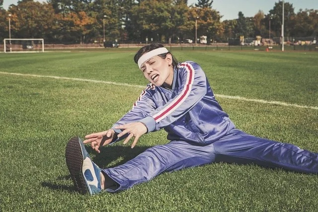
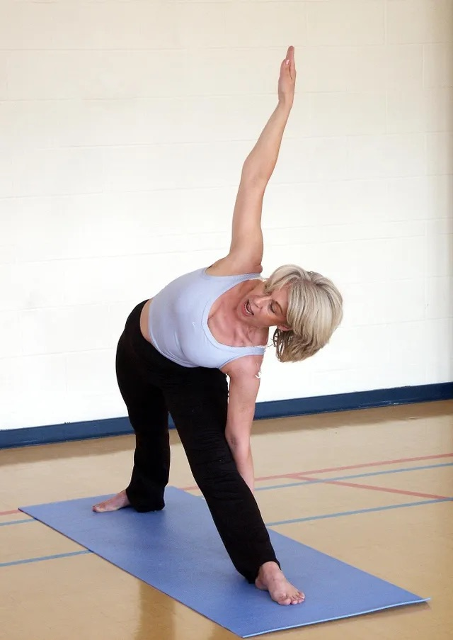

Ikääntyneiden liikunta, osa 3/4 LIIKKUVUUS
Julkaistu alunperin Medisportin blogissa.
Merkittävä osa ikääntyneiden toimintakyvyn ongelmista liittyy tavalla tai toisella fyysisen aktiivisuuden ja liikunnan vähäisyyteen. Omalla toiminnalla ja aktiivisuudella ikääntynyt henkilö pystyy vaikuttamaan oleellisesti omaan toimintakykyynsä ja arjessa jaksamiseensa. Koskaan ei ole liian myöhäistä aloittaa liikuntaa! Tässä neliosaisessa blogisarjassa tarkastellaan ikääntymisen aiheuttamia haasteita fyysisen kunnon osatekijöihin eli voimaan, kestävyyskuntoon, liikkuvuuteen ja tasapainoon. Näiden osatekijöiden riittävä taso on perusedellytys sujuvalle liikkumiselle.
LIIKKUVUUS
Iän mukanaan tuomat muutokset sidekudoksessa aiheuttavat jäykkyyttä ja kankeutta. Näitä muutoksia ovat muun muassa kollageenisäikeiden paksuuntuminen ja kiteytyminen, elastisten säikeiden kimmoisuuden väheneminen, kollageenin vesipitoisuuden laskeminen sekä kollageenimolekyylien sisäisten ja niiden välisten poikittaissiltojen lisääntyminen. Näiden lisäksi fragmentoituminen, rispaantuminen ja kalkkeutuminen lisääntyvät. Kyseiset muutokset aiheuttavat sen, että ikääntyneiden liikelaajuudet ovat pienempiä kuin nuorten.

Ikääntyessä sidekudos puuttuu jäykemmäksi
Riittävä liikkuvuus nivelissä helpottaa yksinkertaisia arjen toimintoja, sillä pienikin liikerajoitus esimerkiksi nilkan nivelissä vaikeuttaa jo esimerkiksi kävelyä ja saattaa tehdä portaissa kulkemisesta hyvin vaikeaa. Rajoittunut lonkan liikkuvuus puolestaan luo omat haasteensa esimerkiksi tuolilta nousemiseen, koska toiminto edellyttää lonkan koukistukselta riittävää liikkuvuutta. Olkanivelen rajoittunut liikkuvuus hankaloittaa yläraajan nostoa ja saattaa kuormittaa samalla alaselän rakenteita, kun puuttuvaa liikkuvuutta joudutaan kompensoimaan sieltä, mistä sitä saadaan.
Portaiden nouseminen vaatii voiman lisäksi riittävästi liikkuvuutta
Pitkäkestoisia muutoksia kudoksessa saadaan venyttelemällä lämmintä kudosta pitkäkestoisesti alhaisella voimalla. Onkin arvioitu, että kertavenytyksen tulisi kestää ikääntyneellä henkilöllä pitempään kuin nuoremmalla ikääntymisen tuomien lihas- ja sidekudoksen muutosten takia. Tutkimusten mukaan liikkuvuuteen ja notkeuteen pystytään vaikuttamaan erilaisilla harjoitusmenetelmillä. Voimaharjoittelu ja venyttely ovat tutkimusten mukaan toimivia, samoin kuin esimerkiksi säännöllinen taiji-harjoittelu.
Oleellista on se, että venyttelyharjoitus on säännöllistä ja toistuvaa, sillä ikä ja inaktiivisuus vaikuttavat kollageenin rakenteeseen. Kollageeni uusiutuu jatkuvasti. Uusiutunut kollageeni on syntyessään lyhyttä. Kollageenin rakenne myös säilyy lyhyenä ilman säännöllistä liikkumista ja venyttelyä. Tässä saattaa olla yksi syy sille, miksi ikääntyessä keho pyrkii kumaraan asentoon. Useasti toistuva, jopa päivittäinen venyttely ja liike, jossa faskiarakenteille tulee luonnollista jännityksen vaihtelua, mahdollistaa kollageenin rakenteen muovautumisen normaaliksi, pitemmäksi, joustavaksi ja kestäväksi. Jos toistuva liike ja venyttely lopetetaan, kollageenirakenne alkaa palautua alkuperäiseen, lyhyeen mittaansa.

Kuten voimaharjoittelunkin, venyttelyn tulee olla säännöllistä, jotta sen vaikutukset säilyvät
Ikääntynyttä vastaan taistelee siis sekä inaktiivisuuden että ikääntymisen tuomat muutokset, jotka ovat osittain samoja. Iän tuomien muutosten takia onkin tärkeää, että ikääntynyt huolehtii säännöllisestä liikkuvuusharjoittelusta säilyttääkseen kehossaan riittävät liikelaajuudet. Venyttely on myös uusimpien tutkimusten mukaan tehokasta hoitoa verenpaineen laskemiseksi!
Ota yhteyttä, jos tarvitset fysioterapeuttista apua lihasvoimaharjoittelun aloittamisessa.
Lähteet:
AHONEN, J. TULE-SAIRAUKSIEN SYVENTÄVÄT OPINNOT, SUMMER SEMESTER 2018.
SAKARI-RANTALA, R 2003. IÄKKÄIDEN IHMISTEN LIIKUNTA- JA KUNTOSALIHARJOITTELU. LIIKUNNAN JA KANSANTERVEYDEN JULKAISUJA 142. LIKES. JYVÄSKYLÄ.
JONGBUM KO, DALTON DEPREZ, KEELY SHAW, JANE ALCORN, THOMAS HADJISTAVROPOULOS, COREY TOMCZAK, HEATHER FOULDS, PHILIP D CHILIBECK 2021. STRETCHING IS SUPERIOR TO BRISK WALKING FOR REDUCING BLOOD PRESSURE IN PEOPLE WITH HIGH-NORMAL BLOOD PRESSURE OR STAGE I HYPERTENSION. JOURNAL OF PHYSICAL ACTIVITY AND HEALTH 2021 JAN 1;18(1):21-28.